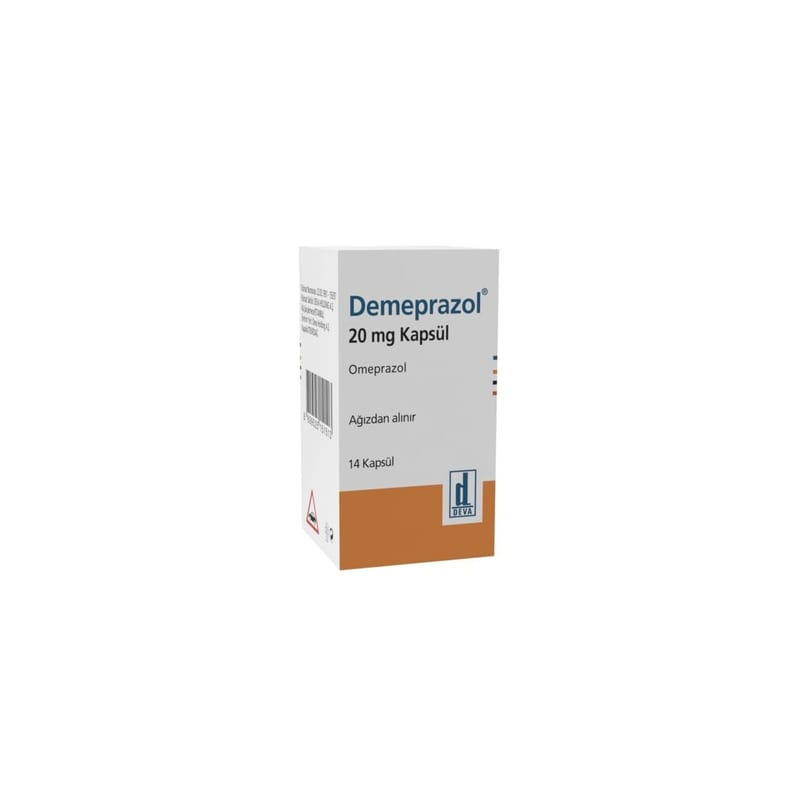

Demeprazol 20 mg Kapsül, 14 Adet

Ne için kullanılır
KT · Bölüm 1DEMEPRAZOL etkin madde olarak omeprazol içerir. „Proton pompası inhibitörü‟ olarak bilinen ilaçlardan biridir. Midenizdeki asit oluĢumunu azaltır.
DEMEPRAZOL mavi renkli, sert jelatin kapsüldür. Kapsüller kremimsi beyaz-krem renkli enterik kaplı pelletler içermektedir. DEMEPRAZOL 14 kapsül içeren blister ambalajlarda bulunmaktadır.
DEMEPRAZOL aĢağıdaki durumların tedavisinde kullanılır: YetiĢkinlerde: “Gastroözofajiyal reflü hastalığı” (GÖRH). Mide asidinin ağrı, iltihaplanma ve mide yanmasına yol açacak Ģekilde yemek borusuna kaçıĢı. Bağırsakların üst kısmındaki ülserler (onikiparmak bağırsağı ülseri) ya da midedeki ülser (gastrik ülser).
“Helicobacter pylori” adlı bakteri ile enfekte (iltihap oluĢturan mikropların bulaĢtığı) ülserler. Eğer sizde böyle bir durum mevcutsa doktorunuz iltihabı tedavi etmek suretiyle ülseri iyileĢtirmek için size ayrıca antibiyotik reçete edebilir. Nonsteroidal antienflamatuar ilaçlar (NSAĠĠ: Ağrı, ateĢ ve iltihaba karĢı etkili ilaçlar) olarak isimlendirilen ilaçların sebep olduğu ülserler. Eğer NSAĠĠ alıyorsanız, oluĢmadan ülseri durdurmak için DEMEPRAZOL kullanılabilir. Pankreastaki büyümeye bağlı olarak midede aĢırı asit olması durumunda (Zollinger-Ellison sendromu)
Çocuklarda: 1 yaş üzeri ve 10 kg ile 10 kg’dan daha ağır olan çocuklarda: GÖRH: Mide asidinin ağrı, iltihaplanma ve mide yanmasına yol açacak Ģekilde yemek borusuna kaçıĢı,
Çocuklarda bu durumun belirtileri mide içeriğinin ağza geri dönmesi, kusma ve kilo artıĢında azalmayı içerebilir.
4 yaĢ üzeri çocuklar ve ergenlerde: “Helicobacter pylori” adlı bakteri ile enfekte ülserler. Eğer çocuğunuzda böyle bir durum varsa doktorunuz iltihabı tedavi etmek suretiyle ülseri iyileĢtirmek için ayrıca antibiyotik reçete edebilir.